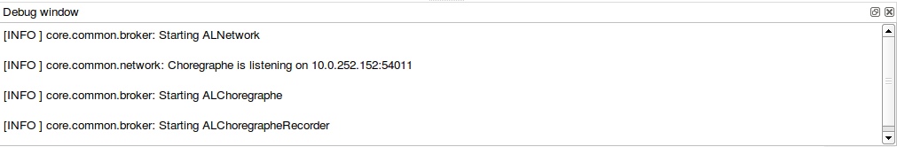

Monitoring NAOqi¶
- NAOqi
Main software running on the robot. No Behaviors can run if NAOqi is not running.
- It runs on the robot, under NAOqi OS distribution.
- It can also run on your computer in order to test your code on a Simulated robots.
NAOqi automatic startup¶
NAOqi is automatically launched in startup.
The script /etc/init.d/naoqi manages NAOqi’s start:
- light up the eyes
- run NAOqi
Restarting and stopping NAOqi¶
To restart NAOqi, execute on the robot:
nao restart
To stop NAOqi, execute on the robot:
nao stop
Loading a module at startup¶
This section assumes that the module has been successfully cross-compiled and copied on the robot.
If you want to use a module which is not loaded by default in NAOqi, you will have to make it load at the beginning of NAOqi. To do so, you must modify the autoload.ini file.
The /home/nao/naoqi/preferences/autoload.ini file contains all libraries to launch when NAOqi start.
- [user] contains all user libraries. You MUST put the full path to your library.
Example:
[user]
the/full/path/to/your/liblibraryname.so # load liblibraryname.so
If your custom module requires other librairies, first make sure that they are properly cross-compiled and copied to the robot. Then, to allow naoqi to find these librairies, you must set LD_LIBRARY_PATH to the path of these current librairies (typically /home/nao/naoqi/lib/):
export LD_LIBRARY_PATH=/full/path/to/your/libs
Then run naoqi as usual.
NAOqi logs¶
Warning
Logs are not part of the NAOqi API set. They may change from one version to another, there is no guarantee of compatibility of any kind. Application developers should not rely on NAOqi log contents.
NAOqi logs from the console¶
By default, if you are logged via ssh on the robot, no NAOqi log shows. There are two ways to visualize the logs:
- by using logview, and
- by launching NAOqi in verbose mode from the console.
To use logview:
Type the command logview on the console, and give it the IP where you want to see the logs (127.0.0.1 for example if you are already on the robot).
To launch naoqi from the console in debug mode:
Run the following command line from /home/nao/:
naoqi --qi-log-debug
This command line is blocking.
Warning
NAOqi is running on this console: if you interrupt it, you also kill NAOqi, so be particularly careful if you do so to prevent the robot from falling abruptly.
NAOqi logs from Choregraphe¶
It is also possible to view NAOqi logs from Choregraphe. To do so, check the “view all logs” box at the bottom left of the log console. From that moment, both Choregraphe and NAOqi logs will appear.
